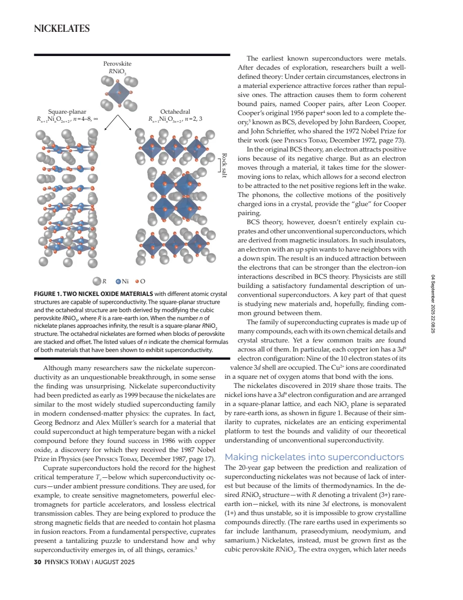
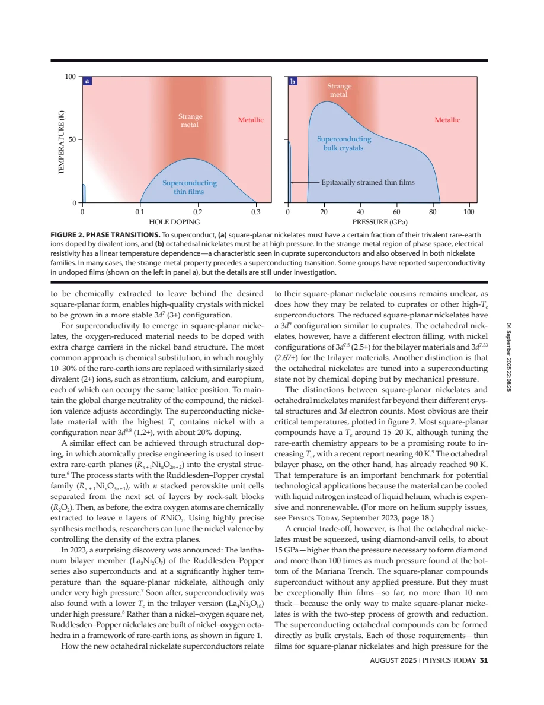
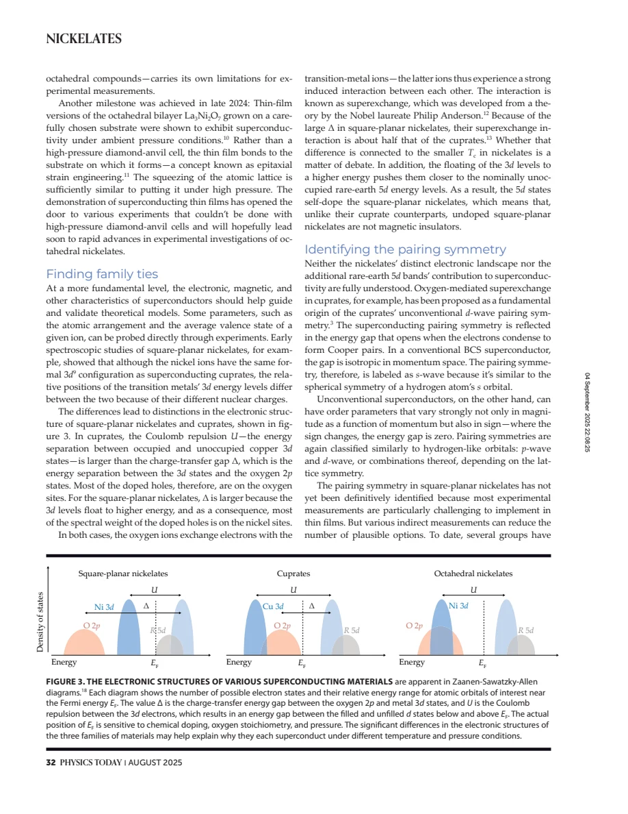
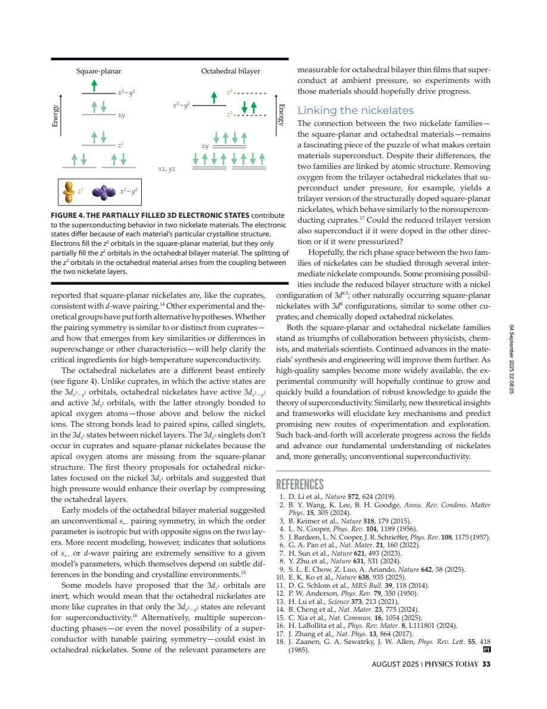

review · Goodge · supplied source 2025
Nickelates provide answers about high-temperature superconductivity — and raise new questions
The supplied August 2025 review compares square-planar and octahedral nickelates as distinct tests of superconducting mechanisms, emphasizing synthesis, orbital filling and unresolved pairing symmetry.
The question: Which nickelate similarities to cuprates are useful, and which differences prevent a simple one-to-one analogy?
Before you start: the few terms you need
- Formal valence: charge-neutrality bookkeeping, not an exact local orbital population
- Square-planar coordination: four in-plane oxygen neighbors
- Octahedral coordination: in-plane plus apical oxygen neighbors
- Epitaxial strain: a substrate constrains a film's lattice dimensions
- Charge-transfer energy Δ: relative oxygen/metal electronic excitation scale
See → explain → test
Understand it in four pictures.
Picture 1 / 4
Separate the two families
Look for: Square-planar nickelates lack apical oxygen; octahedral bilayer/trilayer nickelates retain different coordination and active orbitals.
Swipe across the picture to read every label, or enlarge it below.
- Square-planar family
- Octahedral family
Teaching structural comparison, not an exact atomic-coordinate drawing.
The word nickelate does not identify one common electronic model.
Picture 2 / 4
Distinguish preparation from doping
Look for: A stable oxygen-rich precursor is grown first, then reduced; carrier doping is a separate control.
Swipe across the picture to read every label, or enlarge it below.
- Grow RNiO3 precursor
- Remove selected oxygen
- Square-planar structure
- Tune carrier filling
Teaching square-planar synthesis route summarized by the review; not a recipe for performing reduction.
Obtaining the desired structure and obtaining superconductivity are different stages.
Picture 3 / 4
Ask where doped holes go
Look for: The oxygen 2p and metal 3d energy positions differ, and rare-earth 5d states can participate in nickelates.
Swipe across the picture to read every label, or enlarge it below.
- Cuprates
- Square-planar nickelates
Teaching electronic comparison; no fabricated DOS curves or measured orbital populations.
A shared nominal d9 count does not guarantee the same charge-transfer physics.
Check the original: PDF p. 6
Picture 4 / 4
Keep pairing alternatives open
Look for: Thin films, pressure and multi-orbital environments complicate a decisive gap-symmetry measurement.
Swipe across the picture to read every label, or enlarge it below.
- Measured constraints
- Model alternatives
- Open tests
August 2025 source snapshot. Alternatives differ by family and model parameters.
The review describes evidence and competing models, not a settled pairing assignment.
Predict before revealing
Both a cuprate parent and a square-planar nickelate have a nominal d9 metal count. What can you safely infer?
Choose an answer, then compare the reasoning.
The review stresses differences in oxygen/metal weight, rare-earth self-doping and active orbitals; formal counting alone is insufficient.
Read the answer
The count motivates comparison, but orbital energies and extra bands must also be checked The review stresses differences in oxygen/metal weight, rare-earth self-doping and active orbitals; formal counting alone is insufficient.
Go deeper Follow the full argument
Read this as a dated map of a rapidly developing field
Goodge and Norman survey nickelate superconductivity as understood in August 2025. The PDF includes a publication cover, a photograph of a contacted thin film and a title page before the dense body; the small extracted-text counts on those opening pages do not mean the article is an unreadable scan. The review begins with the 2019 square-planar discovery and then contrasts it with pressure-induced superconductivity in octahedral bilayer and trilayer compounds. Its reported temperatures and synthesis milestones are historical statements in that review, not a freshly verified list of today's records. The useful purpose is conceptual comparison: changing coordination, electron filling, dimensional structure and external control gives tests of which ingredients matter for unconventional superconductivity.
Why the synthesis route changes the experiment
The desired infinite-layer RNiO2 structure has nominal Ni+ with a d9 count, whereas the more stable RNiO3 precursor has a higher formal Ni valence. The review describes growing the precursor and chemically removing oxygen to obtain square-planar coordination. Substituting divalent ions for trivalent rare-earth ions then hole-dopes the material. An alternative inserts extra rare-earth planes, making finite-layer reduced structures with tunable formal filling. These routes need not produce identical disorder or strain. At the source date, the square-planar superconductors discussed are very thin films, restricting probes that require large sample volumes. High-pressure octahedral crystals face a different experimental constraint: the sample environment inside a diamond-anvil cell limits access. Practical synthesis details therefore shape what can be inferred about intrinsic superconducting properties.
Pressure, strain and chemical doping are distinct controls
Octahedral La3Ni2O7 and La4Ni3O10 retain apical oxygen and have nominal nickel counts different from the square-planar d9 parent. The source describes high-pressure superconductivity in these bulk structures and more recent bilayer thin films that superconduct at ambient pressure through epitaxial strain. The latter observation qualifies any blanket claim that all octahedral nickelates require externally applied pressure. Pressure can modify bond distances, angles and orbital overlap without the same formal carrier-count change as chemical substitution. Strain supplies another route to modifying the lattice, but is not numerically identical to hydrostatic pressure in every direction. The review's two phase sketches consequently have different horizontal axes: hole doping for one family and pressure for another. Their similar domes are an organizing picture, not evidence that the axes can be converted directly.
A nominal d9 analogy does not fix the low-energy model
The electronic comparison uses oxygen 2p, transition-metal 3d and rare-earth 5d levels. Cuprates have charge-transfer character, with substantial oxygen weight for doped holes. In square-planar nickelates the higher charge-transfer scale shifts more hole weight toward nickel, and rare-earth bands can self-dope the system. Thus the nominally undoped material need not be the same kind of magnetic insulator as a cuprate parent. The review also discusses a smaller superexchange scale in square-planar nickelates, without proving that it alone sets Tc. Octahedral bilayers add an active dz2 sector coupled across layers through apical oxygen, alongside dx2−y2 states. Some models emphasize interlayer dz2 singlets; others treat that sector as comparatively inert. The actual low-energy degrees of freedom are therefore a question constrained by experiment, not settled by formal valence alone.
What would settle a mechanism comparison
Gap symmetry is one way to test whether family similarities extend beyond structure. The review reports indirect results consistent with d-wave pairing in square-planar materials but states that the symmetry has not been decisively established. For octahedral bilayers, sign-changing s and d-wave proposals depend sensitively on model parameters and crystalline environment. One should not turn that model sensitivity into a measured ability to switch pairing symmetry at will. Thin-film access at ambient pressure creates new opportunities to measure relevant orbital and gap properties, while intermediate structures could help connect the two families. The final lesson is to track which claims are observations, which are theoretical interpretations and which are suggested future experiments. Similar superconducting domes and transition temperatures motivate a comparison; they do not uniquely identify a common pairing interaction.
Translate the mathematics Key equations and symbol meanings
R_(1−δ)A_δNiO2: formal vNi = 1 + δ
Symbols: R: trivalent rare earth; A: divalent substituent; δ: substitution fraction; vNi: formal nickel valence, assuming stoichiometric oxygen and charge neutrality.
Teaching charge-count result corresponding to the review's doping discussion. Formal valence is not the exact projected Ni3d occupation in a covalent, multiband solid.
R_(n+1)Ni_nO_(2n+2): formal vNi = 1 + 1/n
Symbols: n: number of reduced nickel-oxygen layers in a block; R assumed trivalent; oxygen assumed divalent.
Teaching charge-neutrality bookkeeping explains why inserting extra rare-earth planes changes nominal filling. It does not determine Tc.
La3Ni2O7: formal vNi = 2.5; La4Ni3O10: formal vNi = 8/3
Symbols: vNi: average formal valence from La3+ and O2− counts.
The octahedral bilayer and trilayer start from different nominal filling than RNiO2; active orbitals also differ.
Read the evidence A guided look at the original figures

Open the full original page ↗

Open the full original page ↗

Open the full original page ↗

Open the full original page ↗
What this paper does—and does not—establish
- August 2025 review snapshot; numerical records and field-status claims are attributed to this supplied source, not represented as current updates.
- Formal ionic counts are teaching bookkeeping, not exact orbital occupancies.
- Model-dependent gap symmetry and orbital roles remain unresolved in the source; it is a review, not an independent experimental replication of every cited result.
Explain it back.
Try answering aloud before opening the explanation.
Why not say every octahedral nickelate requires a diamond-anvil cell?
The review also describes ambient-pressure superconductivity in epitaxially strained bilayer films.
Does chemical hole doping do exactly the same thing as pressure?
No. Doping changes nominal filling; pressure and strain primarily change structural and electronic parameters, potentially in different ways.
Is pairing symmetry settled by this review?
No. It reports indirect constraints and model alternatives as of August 2025.
Connect the next paper.
Source version, reading coverage and preservation
Full text on all seven pages read; opening cover/photo/title pages and all figures inspected in rendered sheets; sparse opening extraction is explained by layout.
Reviewed body pages: 3, 4, 5, 6, 7. The review's cited primary studies not independently re-read.
Original file retained byte for byte. SHA-256: b09ebac80c5d9134d961f9bc2311b91ab6c2e8fdbd5c792212baab928f16a14a
Filename: PhysToday - Goodge - Nickelates and high temperature superconductivity - 2025.pdf.